Primary Job Function
What is your primary job function? If in management, please indicate the primary job function of your team. 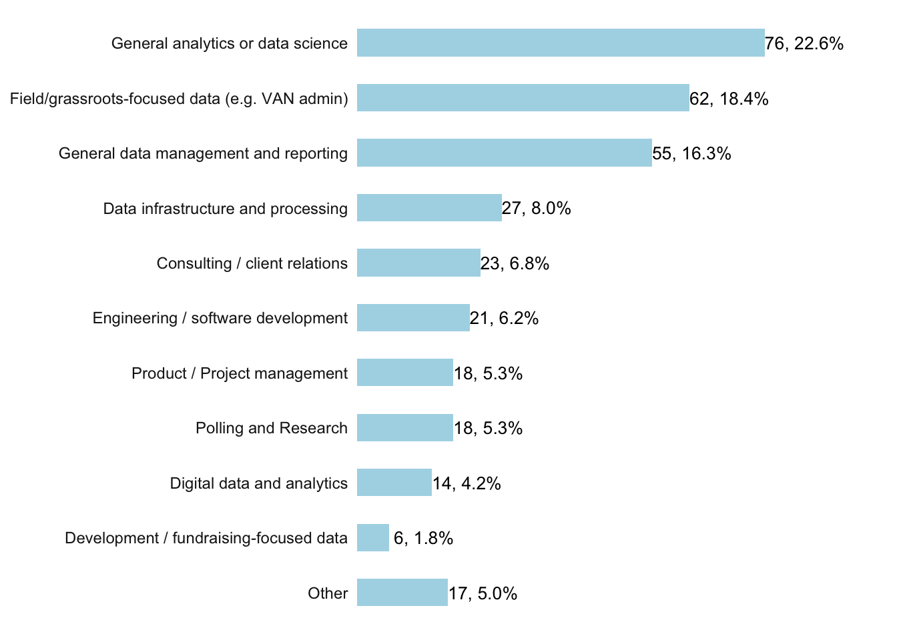
About the Survey: This salary was administered in July and August 2018 to data, analytics, and technology practitioners in progressive politics. There were 347 respondents (a 27% increase from the 273 respondents in 2017) recruited using snowball sampling: the survey was announced on a few major progressive data e-mail listservs, and readers were encouraged to share the survey around their offices. Survey organizers also reached out to specific, large organizations within the progressive community.
See Notes for more information about who was eligible.
Thank you to everyone who participated in or distributed this survey!
About Respondents:
Respondents were 50% cis women and 46% cis men, a notable change from last year when the majority of respondents (56%) were male.
Respondents were 73% white.
The median age was 25 to 29.
93% of all respondents have a bachelor’s degree or above, and 63% earned their highest degree in the social sciences. This is comparable to last year’s results.
There was wide distribution across different types of organizations, but Issue Advocacy Organizations (18%), Analytics & Polling firms (16%) and Labor Unions (14%) represented nearly half of all respondents, similar to last year’s findings.
A quarter of respondents reported that their primary function is general analytics or data science (23%). Field/grassroots/VAN admin (18%) and general data management and reporting (16%) were the next most commonly reported primary job functions.
35% of all respondents were managers, meaning they managed 1 or more people. Unlike last year when men were 16% more likely to be managers than women, results were more comparable. 33% of men were managers and 36% of women were managers.
The likelihood of being a manager did not meaningfully vary between white respondents and people of color.
Salary: The median salary reported was $75,000 to $79,999
The median salary has stalled since 2014 when this survey began. The median salary that year was $79,500 for men and $72,000 for women. The median was not provided in the 2015 report, but the average was $76,506. In 2016 the median was $60,001 to $75,000. Last year’s (2017) median salary was $70,000 to $74,999. This year the median was $75,000 to $79,999.
Non-whites had a lower median salary at $70,000 to $74,999 versus $80,000 to $84,999 for whites. This gap persists across years of experience.
Men and women had the same median salary at $75,000 to $79,999.
Entry-level employees had a median salary of $55,000 to $59,999; mid-level employees $70,000 to $74,999; and senior / department-head employees $95,000 to $99,999. This is similar to last year’s results.
Non-managers had a median salary of $70,000 to $74,999 while managers of 1-4 staffers made $10,000 more.
Above a Bachelor’s degree, the positive relationship between level of education and salary is not statistically significant
Negotiation:
79% of all respondents who negotiated for an improvement in salary, benefits, or title received a positive outcome, including 73% who improved their compensation. Of those who improved their compensation, nearly 81% saw an increase greater than 5%.
While women were more likely to negotiate (53%) than men (44%), women were less likely to be successful - 14% of women saw no improved compensation, benefits and/or title and only 6% of men failed to have a positive outcome.
What is your gender identity?
What is your race / ethnicity? Please select all that apply.
What is your age? 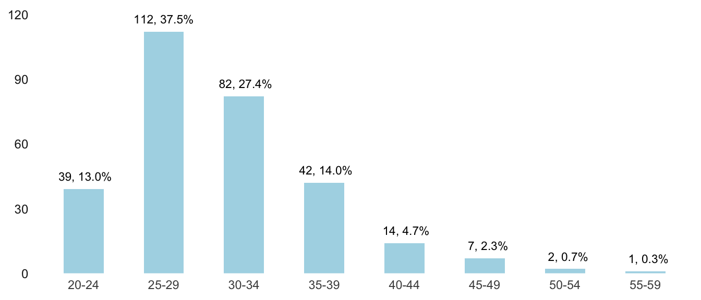
Do you consider yourself to be …?
You are considered to have a disability if you have a physical or mental impairment or medical condition that substantially limits a major life activity, or if you have a history or record of such an impairment or medical condition.
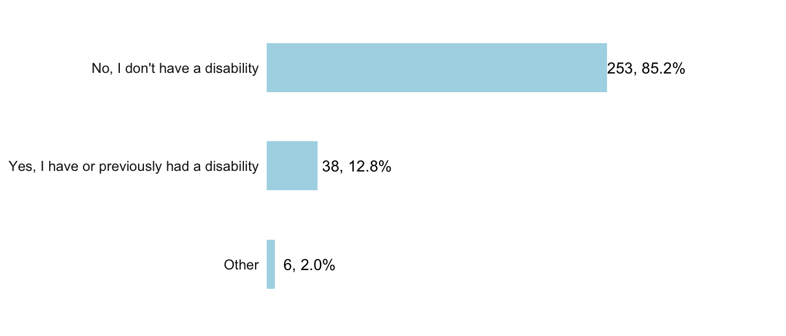
How long have you or your family lived in the United States? 
What’s your zip code? [only asked to US respondents, responses coded to Census metropolitan areas]
What is the highest level of education that you have completed? 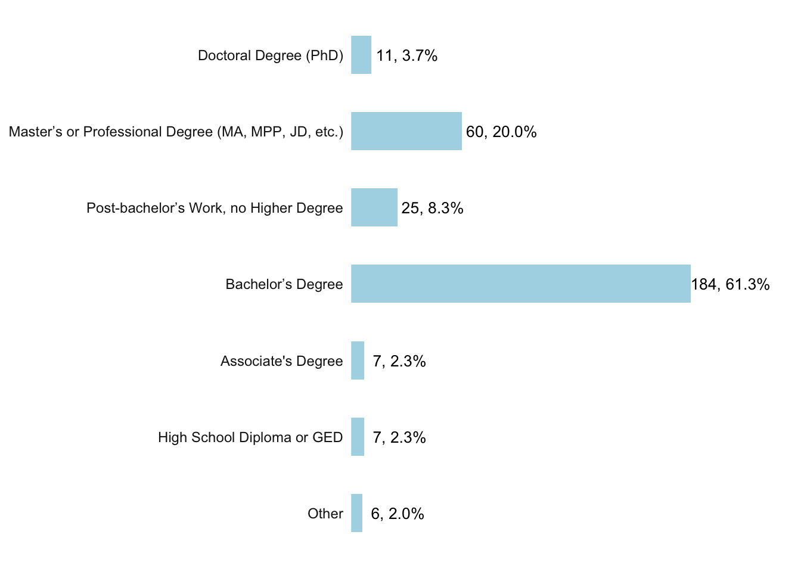
The field of study for my most recent degree is… [only asked to respondents who have completed at least a Bachelor’s degree] 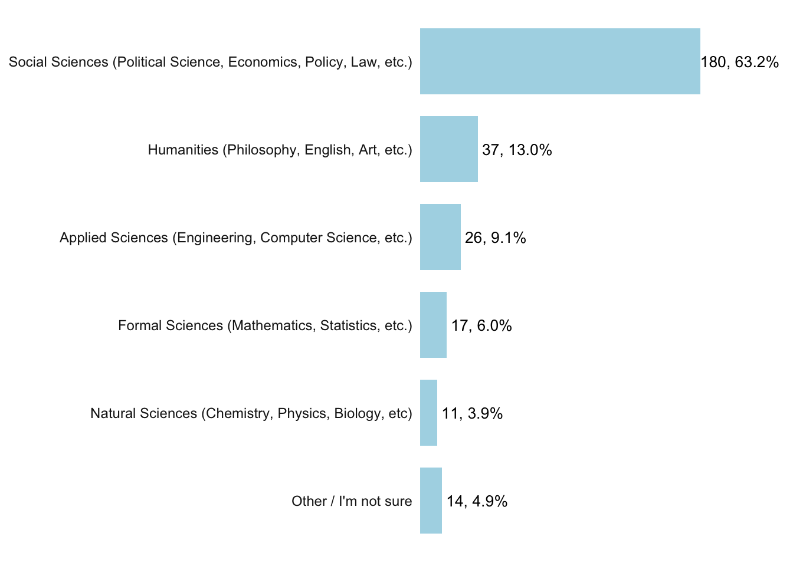
What is your current employment status? 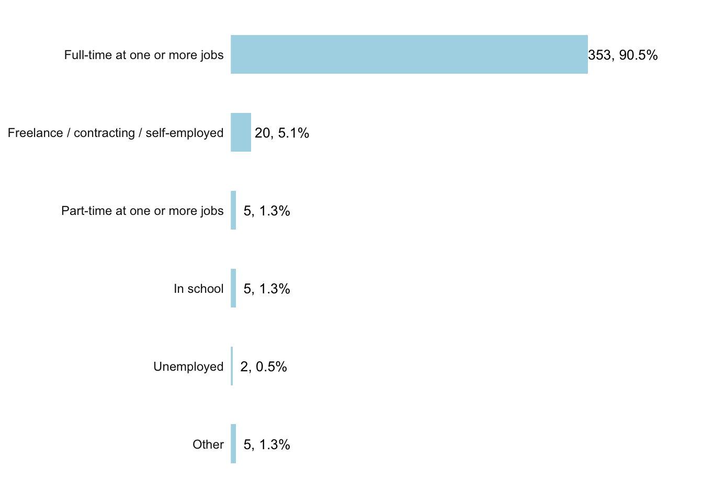
How many years of work experience do you have in progressive politics in data, analytics, and technology (i.e., how many years have you been a progressive data, analytics, or technology practitioner)? 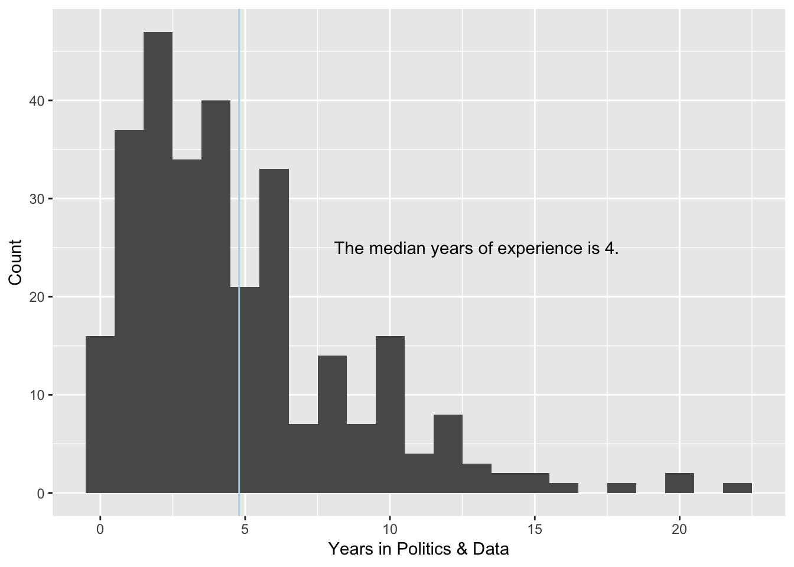
How many years of work experience do you have in progressive politics but not in data, analytics, and technology (i.e., exclude any years worked in data, analytics, and technology)? 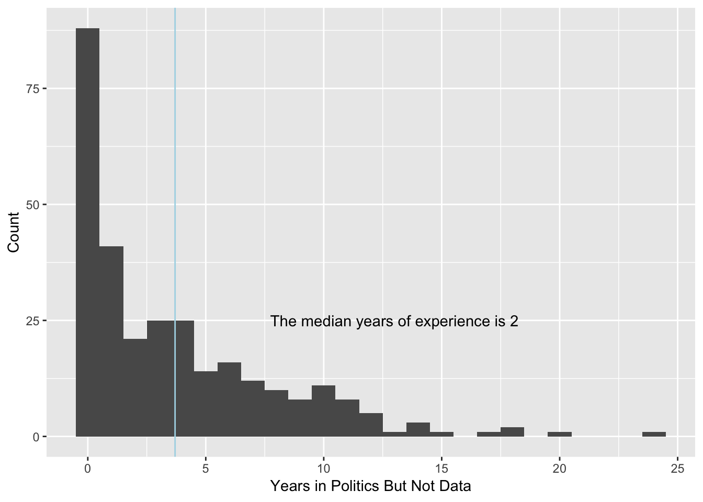
How many years of work experience do you have in data, analytics, and technology but not in progressive politics? 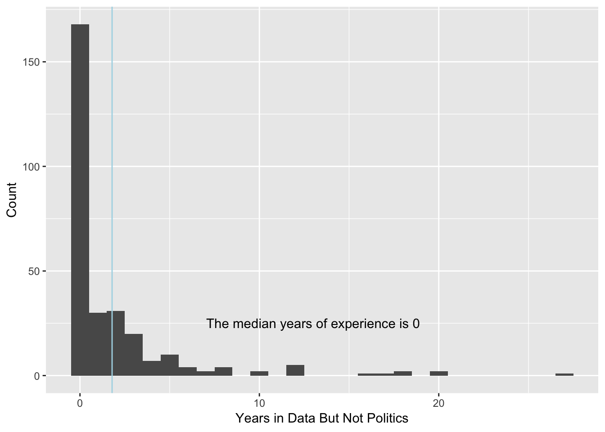
How would you describe the organization?
What is your primary job function? If in management, please indicate the primary job function of your team. 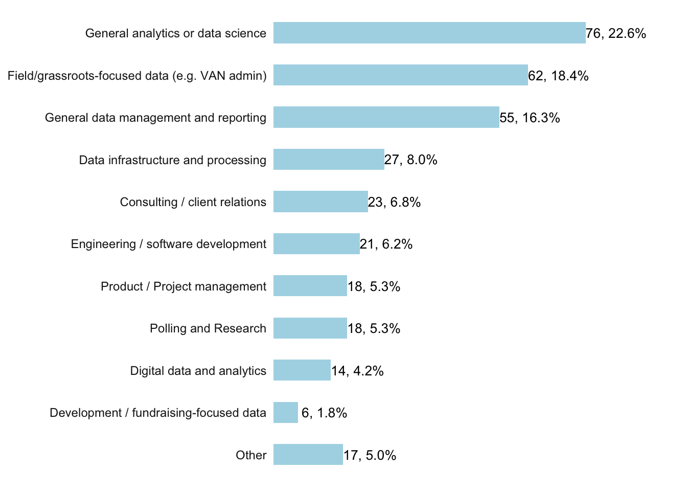
How would you describe your level of seniority within the organization?
How many full-time staffers do you manage? Please include everyone who reports “up the chain” to you, both directly or through layer(s) of management.
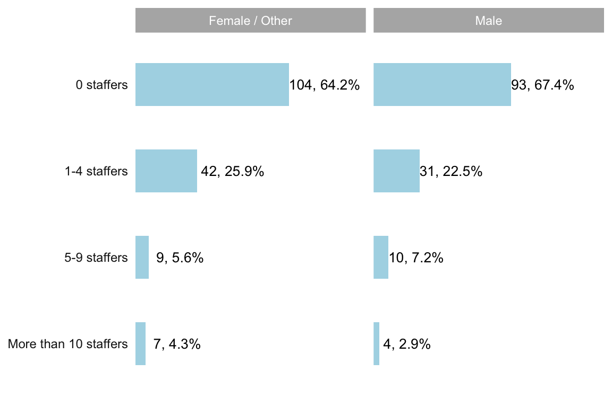
What percentage of your time do you spend directly conducting analysis or writing code — as opposed to, e.g., communicating with external partners or managing staff?
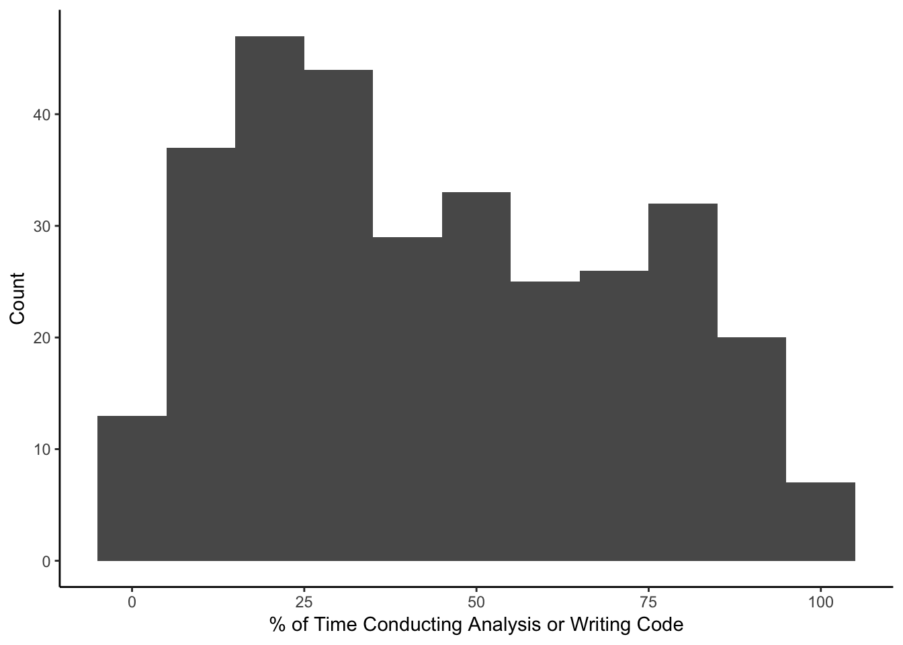
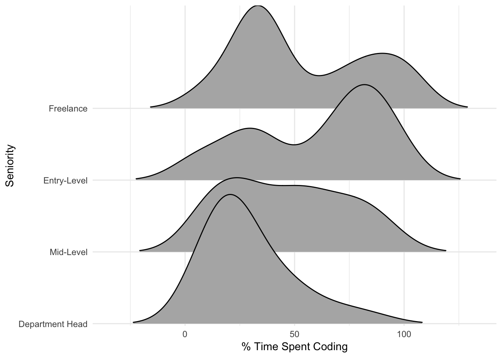
Please describe the total expected annual pre-tax income, including bonuses or commissions. This figure may be salaried or unsalaried.
The median salary is $75,000 to $79,000
For numeric analyses, salary was recorded as the midpoint of the interval. For those reporting salary under $20,000, the value recorded was $20,000, and for those reporting salary over $200,000, the value recorded was $200,000.
Which of the following benefits are you personally eligible for? Select all that apply.
During your last job offer or performance review, did you try to negotiate your salary? 
Was your negotiation successful? Please select all that apply. [only asked to respondents who attempted a negotiation]
What was % increase in compensation that you negotiated? For example, if your base salary is $50,000 and you negotiated a raise of $5,000, that is a 10% increase ($5,000 / $50,000). [only asked to respondents who reported an increase in compensation after negotiating]** 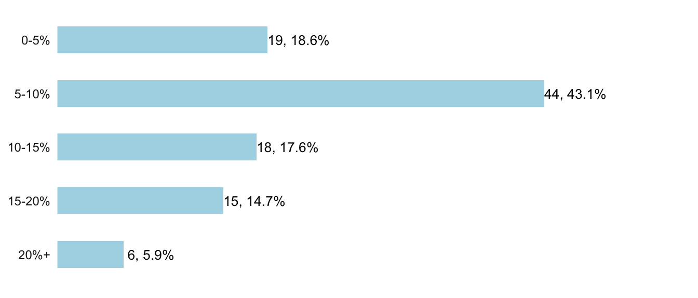
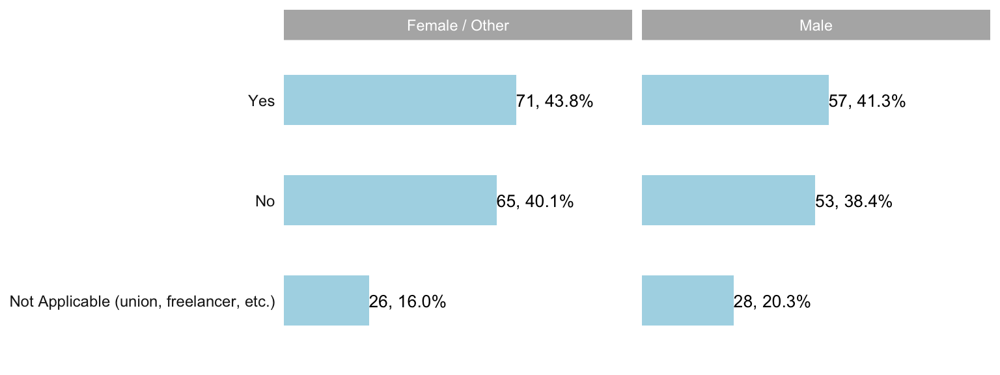
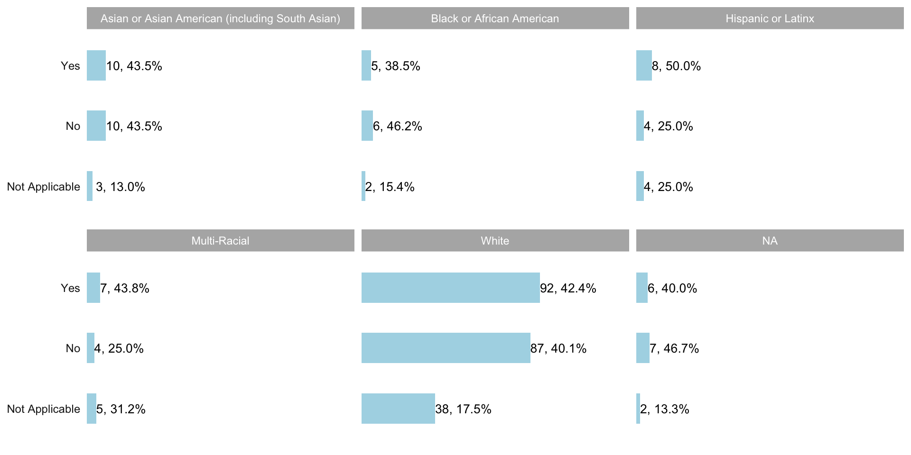
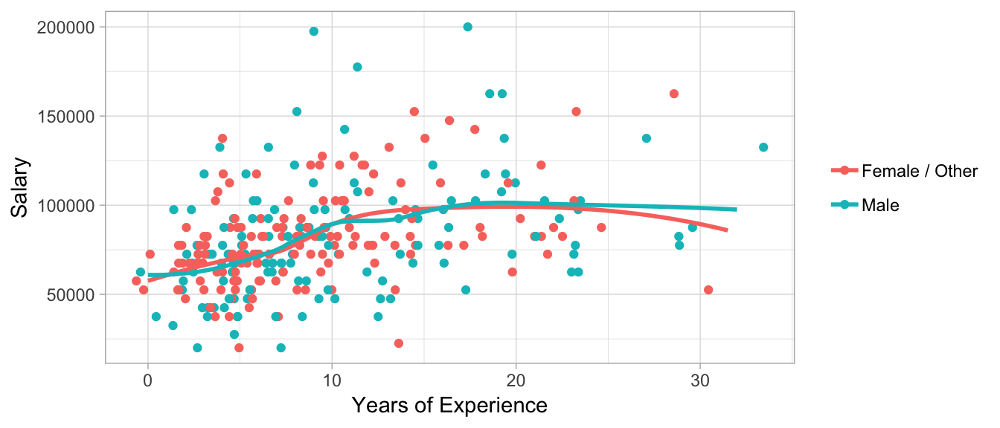
| race | gender | mean | median | n |
|---|---|---|---|---|
| POC | Male | $73,445 | $70,000 to $74,999 | 37 |
| POC | Other/Female | $73,750 | $70,000 to $74,999 | 46 |
| White | Male | $87,747 | $80,000 to $84,999 | 101 |
| White | Other/Female | $84,827 | $80,000 to $84,999 | 116 |
| age | mean | median | n |
|---|---|---|---|
| 20-24 | $57,949 | $55,000 to $59,999 | 39 |
| 25-29 | $77,120 | $70,000 to $74,999 | 112 |
| 30-34 | $90,305 | $80,000 to $84,999 | 82 |
| 35-39 | $96,309 | $90,000 to $94,999 | 42 |
| 40-44 | $102,679 | $95,000 to $99,999 | 14 |
| 45-49 | $93,214 | $85,000 to $89,999 | 7 |
| sexuality | mean | median | n |
|---|---|---|---|
| Heterosexual or straight | $83,441 | $75,000 to $79,999 | 215 |
| Bisexual | $81,544 | $70,000 to $74,999 | 34 |
| Gay or Lesbian | $80,985 | $75,000 to $79,999 | 33 |
| Different identity | $76,094 | $65,000 to $69,999 | 16 |
| disability | mean | median | n |
|---|---|---|---|
| No, I don’t have a disability | $83,221 | $75,000 to $79,999 | 253 |
| Yes, I have or previously had a disability | $76,094 | $75,000 to $79,999 | 38 |
| Other | $72,500 | $70,000 to $74,999 | 6 |
| education | mean | median | n |
|---|---|---|---|
| Doctoral Degree (PhD) | $99,772 | $90,000 to $94,999 | 11 |
| Master’s or Professional Degree (MA, MPP, JD, etc.) | $92,375 | $80,000 to $84,999 | 60 |
| Post-bachelor’s Work, no Higher Degree | $79,600 | $80,000 to $84,999 | 25 |
| Bachelor’s Degree | $77,826 | $70,000 to $74,999 | 184 |
| Associate’s Degree | $90,357 | $90,000 to $94,999 | 7 |
| High School Diploma or GED | $68,214 | $75,000 to $79,999 | 7 |
| Other | $125,417 | $115,000 to $119,999 | 6 |
| field of study | mean | median | n |
|---|---|---|---|
| Applied Sciences (Engineering, Computer Science, etc.) | $83,942 | $75,000 to $79,999 | 26 |
| Formal Sciences (Mathematics, Statistics, etc.) | $94,265 | $85,000 to $89,999 | 17 |
| Humanities (Philosophy, English, Art, etc.) | $84,797 | $80,000 to $84,999 | 37 |
| Natural Sciences (Chemistry, Physics, Biology, etc) | $72,727 | $70,000 to $74,999 | 11 |
| Social Sciences (Political Science, Economics, Policy, Law, etc.) | $82,000 | $75,000 to $79,999 | 180 |
| Other / I’m not sure | $81,964 | $70,000 to $74,999 | 14 |
| organization type | mean | median | n |
|---|---|---|---|
| Analytics / Polling firm | $85,134 | $80,000 to $84,999 | 56 |
| Government agency, contractor, or related employer | $100,357 | $90,000 to $94,999 | 21 |
| Issue or Advocacy Organization | $83,500 | $80,000 to $84,999 | 60 |
| Labor union | $81,543 | $75,000 to $79,999 | 47 |
| Non-issue-specific Independent Expenditure group | $83,214 | $70,000 to $74,999 | 21 |
| Other consulting firm (media, field, digital, etc.) | $91,771 | $85,000 to $89,999 | 24 |
| Party committee | $69,211 | $60,000 to $64,999 | 38 |
| Political campaign | $62,833 | $55,000 to $59,999 | 15 |
| Vendor (e.g., technology vendor) | $91,667 | $80,000 to $84,999 | 39 |
| Other | $86,429 | $75,000 to $79,999 | 14 |
| seniority | mean | median | n |
|---|---|---|---|
| Organization Head | $69,167 | $60,000 to $64,999 | 6 |
| Department Head | $99,405 | $95,000 to $99,999 | 63 |
| Senior-Level but not Department Head | $100,281 | $95,000 to $99,999 | 80 |
| Mid-Level | $74,922 | $70,000 to $74,999 | 128 |
| Entry-Level | $57,606 | $55,000 to $59,999 | 47 |
| Freelance | $97,500 | $90,000 to $94,999 | 10 |
| Other | $52,500 | $50,000 to $54,999 | 1 |
| staff managed | mean | median | n |
|---|---|---|---|
| 0 staffers | $76,500 | $70,000 to $74,999 | 218 |
| 1-4 staffers | $88,313 | $80,000 to $84,999 | 83 |
| 5-9 staffers | $117,500 | $115,000 to $119,999 | 21 |
| More than 10 staffers | $118,269 | $120,000 to $124,999 | 13 |
| primary job function | mean | median | n |
|---|---|---|---|
| Consulting / client relations | $106,196 | $95,000 to $99,999 | 23 |
| Data infrastructure and processing | $73,942 | $75,000 to $79,999 | 26 |
| Development / fundraising-focused data | $57,500 | $55,000 to $59,999 | 5 |
| Digital data and analytics | $75,000 | $75,000 to $79,999 | 14 |
| Engineering / software development | $95,357 | $85,000 to $89,999 | 21 |
| Field/grassroots-focused data (e.g. VAN admin) | $67,379 | $65,000 to $69,999 | 62 |
| General analytics or data science | $86,067 | $75,000 to $79,999 | 75 |
| General data management and reporting | $81,591 | $75,000 to $79,999 | 55 |
| Polling and Research | $82,083 | $80,000 to $84,999 | 18 |
| Product / Project management | $112,917 | $100,000 to $104,999 | 18 |
| Other | $94,265 | $90,000 to $94,999 | 17 |
Respondents could have selected more than one choice or not made a selection. Percentages shown are of all respondents regardless of whether they answered the question.
Are you planning to leave your organization within the next year? [only asked if respondent’s current employment status was not “Unemployed” or “Freelance”]
Where do you want or expect to be working a year from now? Select all that apply. [only asked if respondents indicated (to the question about where they would be in one year) if they planned to actively look for new opportunities or if they might leave or if they indicated (to the question about next career steps) if they planned to move to another organization.]
Respondents could have selected more than one choice or not made a selection. Percentages shown are of all respondents regardless of whether they answered the question.
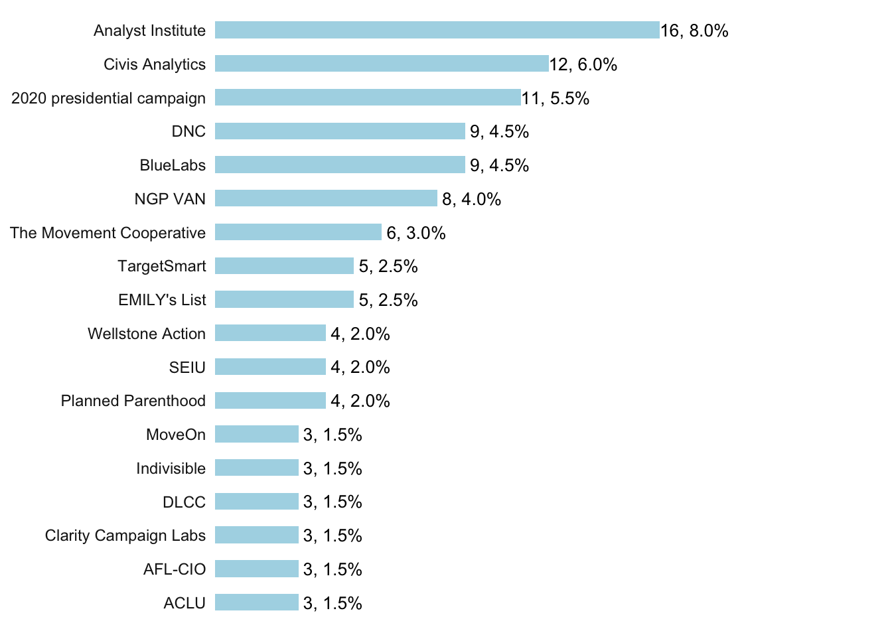
The following organizations each had 2 votes: 18F, Action Network, AFSCME, Catalist, Empower Engine, Everytown for Gun Safety, FiveThirtyEight, Google, Hustle, NDRC, Obama Foundation, Salesforce, self-employment
The following organizations each had 1 vote: 270 to Win, Actionkit, Airbnb, America Votes, Black Lives Matter, City government, Colorlines, CZI, DCCC, Democratic Socialists of America, Enigma Technologies, GiveWell, Human Rights Campaign, Integral, LCV, Mobilize America, NAACP, NEA, New America, NNU, Optoro, Our Revolution, PDI, Southern Poverty Law Center, Sum of Us, TakeAction MN, The Lab @ DC, The NBA, threespot, Urban Institute, White House (2021)
Respondents were only eligible to take this survey if (1) they worked in progressive politics AND (2) if their organization, role, or team focused on data, analytics, or technology.
Respondents satisfied the first criteria if they answered “Yes” to one of the following two questions:
Do you currently work at an organization that either works in progressive politics or has some clients who work in progressive politics? Or, if you freelance, do you have some clients that work in progressive politics?
Within the last 12 months, have you worked at an organization that either works in progressive politics or has some clients who work in progressive politics? Or, if you freelanced, did you have some clients that worked in progressive politics?“
If the answer to both was “No”, the respondent was not permitted to proceed with the survey.
The second criteria was satisfied if the respondents answered “Yes” to one or more of the following questions:
Is the primary focus (>40% of resources) of your organization data, analytics, or technology?
Is the primary focus (>40% of resources) of your team data, analytics, or technology?
Is the primary focus (>40% of time) of your role data, analytics or technology?